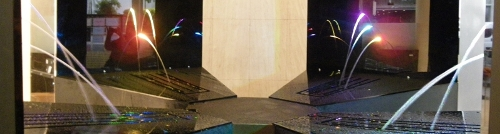
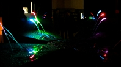
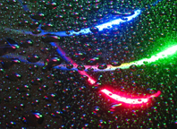

| |
Fontaines laser
(*)
De l'installation expérimentale minuscule à 10€ du
Laboratoire de Physique des Lasers (LPL-Paris XIII) à un ouvrage de
bonne taille offrant plus de possibilités, le CNRS a fait évoluer un
dispositif à vocation pédagogique vers un véritable point d'orgue
programmé pour le cinquantenaire du laser (décembre 2010, Bordeaux).
|

|
|
Guider la lumière, avant de devenir un enjeu technique et commercial (fibre
optique) ou même scientifique, a été un défi en soi. Comment courber ces rayons
toujours droits, immatériels mais inflexibles ?
Une question qui n'a pas d'âge.
Ainsi citerons-nous un extrait du document de l'In2p3 (accessible
intégralement par le lien ci-contre) : « Au milieu du XIXème siècle,
Jean-Daniel Colladon eut l’idée lumineuse de concentrer les rayons issus
d’une lampe sur l’embouchure du jet d’eau créé par un réservoir percé
sur un de ses flancs. Le résultat qu’il décrit lui-même est
spectaculaire: "la lumière circule dans ce jet transparent, comme dans
un canal, et en suit toutes les inflexions !". Une expérience similaire
fut réalisée dès 1840 par Jacques Babinet : ce dernier expliqua même
comment le principe du guidage de la lumière pouvait s’étendre à des
cylindres de verre courbés, anticipant ainsi les futures fibres
optiques… »
|
|
Faire de la physique autour des fontaines laser (Pdf de l'In2p3,
avec entre autre la description d'un premier "montage à 10€")
Le document "fondateur" du LPL-Paris XIII
La fontaine du cinquantenaire
Le site de l'artiste concepteur, Steve Veloso
Le chapitre
XIII des Dialogues de Dotapea, consacré au laser |
|
Une petite réserve toutefois : l'expérience est peut-être beaucoup plus
ancienne car le verre n'est pas nouveau (il a pu être utilisé comme
canal pour la lumière dès l'Antiquité, information non confirmée (**)) et avant lui, il y a eu la
glace.
On pense par exemple à une oeuvre célèbre et intemporelle
(ci-contre) de Andy Goldsworthy, réalisée avec quelques morceaux de
stalactites, un peu d'eau liquide pour les souder, un rocher comme
support et surtout un rayon de soleil levant.
Certes, cela ne fonctionne
pas de la même manière et il y a un artifice car le serpentin ne
traverse pas le rocher. Cependant, l'artiste piège bien la lumière dans
un matériau transparent qui n'est pas de forme droite. L'homogénéité de
l'illumination est parlante. Et cela a pu être
réalisé au paléolithique.
|
|
|
|
Dans le cas de l'eau ou de la glace, c'est
l'air lui-même qui joue le rôle de la gaine d'une fibre optique. Dans
une fibre optique, on joue, en incorporant localement différents
matériaux, sur un écart d'indices de réfraction
entre le centre (ou coeur, très siliceux)
et la gaine afin de canaliser la lumière. La gaine évite que
celle-ci s'évade. Au lieu de cela, elle rebondit de proche en proche.
La gaine n'a pas un rôle purement protecteur comme on peut le lire
parfois, ici
ou là. Elle fait beaucoup plus et ce que l'on nomme le protecteur
est un troisième milieu situé autour de la gaine, toujours dans le corps même de
la fibre.
|
|
Note : la présence de silice très pure dans la
fibre peut surprendre. En effet, comment un matériau aussi cassant
peut-il être souple ?
C'est tout simplement sa finesse (10µm) qui
fait sa souplesse, comme pour un fil métallique. Plus c'est fin,
plus c'est souple.
|
|
Entre l'indice de réfraction de l'eau et
celui de l'air, l'écart est assez important pour que la lumière soit
également canalisée.
L'un des enjeux des fontaines laser est de faire comprendre que c'est la
variation de l'indice de réfraction qui permet de "courber" la lumière.
Un autre extrait du document de l'In2p3 : « Il s'agit tout d'abord
d'expliquer le guidage de la lumière par réflexion totale dans les jets
d'eau, ces derniers formant une version macroscopique des fibres
optiques. Ici le milieu guidant est aqueux et non vitreux, et la « gaine
» est faite d’air : les notions fondamentales (contraste d’indice avec
un indice plus fort dans le coeur que dans la gaine, réflexion totale,
courbure possible) sont bien respectées. Dans le cas du guidage dans un
jet d’eau, la différence entre l’indice du coeur (neau=1,33)
et l’indice de la gaine (nair=1) est bien plus important que
pour une fibre optique classique (valant dans ce cas quelques millièmes)
et l’injection s’en trouve grandement facilitée. »
Autre point fort pédagogique : « Le calcul de la vitesse de
l'écoulement repose sur l’application de l’équation de Bernoulli et le
calcul de la trajectoire du jet d'eau reste simple : quelques notions de
mécanique des fluides de base peuvent ainsi être introduites. » On
notera au passage que l'équation de Bernoulli devrait être prochainement
abordée sur Dotapea.
Quant au laser, bien sûr il est au centre
de ces dispositifs. Il suffit d'essayer d'obtenir les mêmes résultats
avec une lampe de poche pour comprendre à quel point cette lumière est
différente par sa concentration directionnelle (si ces termes sont biens
choisis).
|
|
 |
|
L'eau semble se teinter d'une manière uniforme. On le constate avec une
seule couleur mais c'est encore mieux avec trois, les trois primaires
(rouge, vert, bleu) de la synthèse
additive, car on obtient une illustration directe de ce phénomène en
modulant l'intensité des trois sources colorées.
Ces dispositifs ont-ils leur place dans une section nommée « hi-tech » ?
En fait chers amis lecteurs, à strictement parler non, pas du tout,
puisque l'on célèbre une technologie déjà vieille de cinquante ans.
Mais à moins strictement parler, oui, tout à fait !
Pour deux raisons :
* comme le
chapitre XIII peut le faire sentir en entrant dans le détail du
sujet, le laser demeure une haute technologie même cinquante ans après
son invention. Au-delà, il nous réserve sans doute encore quelques
surprises. On pense entre autres à l'avenir de
l'holographie, encore débutante,
mais aussi à ce qui va suivre le "blue ray" balbutiant, aux applications
dans les domaines de la fusion nucléaire, du pointage des télescopes,
etc. Le chemin parcouru donne déjà le vertige mais la science n'a très
probablement pas fini d'explorer les applications du laser.
*
ce jubilée d'or (***) est
marqué par l'intervention d'un jeune artiste (voir lien dans
l'encadré) travaillant avec une équipe de
scientifiques. C'est une manière de travailler qui reste encore
extrêmement marginale mais qui pourrait se développer. Sur ce
point également on peut entrevoir des perspectives.
|
|
 |
|
_____
(*) laser ne prend pas de s en
apposition.
(**) La transmission
dans le verre de l'époque n'a cependant pas pu dépasser quelques
centimètres. C'était aussi le cas des premiers câbles optiques. De
toute façon même pour ceux qui ont suivi, c'est bel et bien la
lumière laser qui permet de faire beaucoup mieux.
Cependant, 3 ou 5 cm ou même un peu plus (avec
du cristal), cela nous semble modeste mais c'est suffisant pour
obtenir quelques effets. L'autre partie du problème était de bien
concentrer le rayon. A partir d'Archimède, c'est possible mais
encore une fois sans comparaison avec la précision des lasers.
(***) un jubilée d'or célèbre un
cinquantenaire.
Cliquer sur le bouton « Précédent »
de votre navigateur pour revenir dans le corps du texte.
|
|
|
Retour
début de page
|
|

 Communication
Communication


|
|